▲ 정지선과 횡단보도가 있는 도심 교차로 ⓒ Cyberdoomslayer / Wikimedia Commons (CC BY-SA 4.0)
"노란불에 넘었는데 신호위반이라니?" 황색신호 통과, 꼬리물기, 정지선 침범, 비보호좌회전은 모두 "신호 상황"에서 벌어지지만 적용되는 조문과 범칙금·벌점이 서로 다르다. 이 글은 개별 위반 규정을 나열하는 대신 "지금 내 차가 이 위치에서 이 신호를 만났을 때 어떤 판정이 나는가"의 순서로 정리했다. 도로교통법 제5조·제25조·제27조, 시행규칙 별표 2·28, 시행령 별표 6·8·10을 국가법령정보센터 본문으로 직접 대조했다(기준일 2026년 10월 4일, 법률은 2026년 7월 1일 시행본).
우회전 일시정지만 따로 자세히 보려면 우회전 일시정지 기준 기사를, 12대 중과실 전체 목록은 12대 중과실 기사를, 카메라 종류별 단속은 이동식·구간단속 카메라 기사를 참고하면 된다. 여기서는 신호등 앞에서 벌어지는 상황별 판정에만 집중한다.
1. 법은 황색신호를 이렇게 쓴다 — 시행규칙 별표 2 원문
신호의 뜻은 도로교통법 시행규칙 별표 2(신호기가 표시하는 신호의 종류 및 신호의 뜻)에 있다. 원형 차량 신호등의 핵심 문장을 요약하면 아래와 같다. 황색은 "서행하며 통과"가 아니라 정지 신호에 가깝게 규정돼 있다.
| 신호 | 차마가 할 수 있는 것 | 해서는 안 되는 것 |
|---|---|---|
| 녹색 | 직진·우회전. 비보호좌회전 표지(표시)가 있는 곳에서는 좌회전 | 표지가 없는 곳의 좌회전은 별도 좌회전 신호가 필요 |
| 황색 | 이미 교차로에 차마의 일부라도 진입한 경우 신속히 교차로 밖으로 진행, 우회전 | 정지선·횡단보도가 있으면 그 직전, 없으면 교차로 직전에서 정지해야 함. 우회전 시 보행자 횡단 방해 금지 |
| 적색 | 우회전(정지선·횡단보도·교차로 직전에서 정지한 뒤 신호에 따라 진행하는 다른 차마를 방해하지 않을 때) | 정지선·횡단보도·교차로 직전에서 정지. 우회전 삼색등이 적색이면 우회전 불가 |
| 황색 점멸 | 다른 교통·안전표지에 주의하며 진행 | — |
| 적색 점멸 | 정지선·횡단보도·교차로 직전에서 일시정지한 뒤 다른 교통에 주의하며 진행 | 일시정지 없이 진행 |
📍 법문의 구조를 먼저 읽는다
황색 문장은 "정지하여야 하며, 이미 교차로에 일부라도 진입한 경우에는 신속히 교차로 밖으로 진행"의 두 부분으로 나뉜다. 즉 기준 위치는 "정지선(또는 교차로) 직전"이고, 허용되는 통과는 "이미 진입한 차"에 한정된다. 정지선 앞에서 황색을 만나 정지선을 넘는 경우를 별도로 허용하는 문장은 별표 2에서 찾지 못했다.
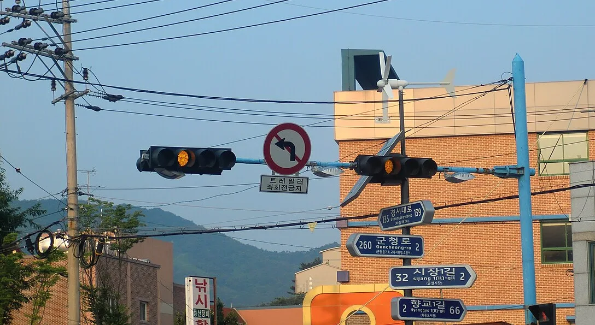
▲ 황색 등화가 켜진 한국 차량 신호등(좌회전 금지 표지 부착). 촬영 시기는 파일 정보 기준이며 현재 신호 체계와 다를 수 있다 ⓒ hyolee2 / Wikimedia Commons (CC BY-SA 3.0, 원본 일부 크롭)
2. 정지선 코앞에서 황색이 켜졌다면 — 대법원 판단과 "정지거리" 계산
가장 많이 다투는 장면은 정지선까지 거리가 짧아 급제동해도 정지선을 넘을 것 같을 때다. 2024년 5월 보도된 대법원 3부 판결은 제한속도를 시속 20km 넘겨 달리던 운전자가 황색 신호에서 정지하지 않고 교차로에 진입해 오토바이와 부딪힌 사건에서, 1·2심의 무죄 취지 판단을 뒤집고 유죄 취지로 사건을 돌려보냈다. 보도에 따르면 황색이 켜진 순간 차량과 정지선 사이는 약 8.3m, 급제동 시 정지거리는 30m 이상으로 추정됐다. 핵심 판시는 다음과 같다.
⚖️ 대법원 판시 요지 (2024년 5월 보도 인용)
"교차로 진입 전 황색 신호로 바뀐 이상 차량 정지거리가 정지선까지의 거리보다 길 것으로 예상되더라도 교차로 직전에 정지하지 않았다면 신호를 위반했다고 보는 게 타당하다." 사건번호는 확인하지 못했고, 위 내용은 언론 보도에 인용된 판시다.
법조계 일각에서는 이 판단이 "정지할 수도 통과할 수도 없는 구간(딜레마존)"을 인정하지 않는 것이라는 지적과 함께 신호기 잔여시간 표시 같은 제도 개선 요구도 나왔다. 이 글은 판결의 옳고 그름이 아니라 단속·수사·재판에서 어떤 기준이 쓰이는가만 정리한다.
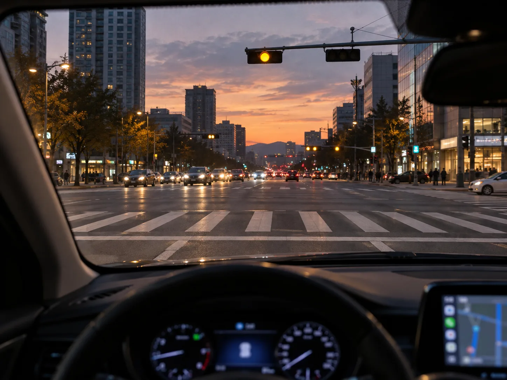
▲ 정지선 앞에서 황색이 켜지는 순간(설명용 AI 생성 예시 이미지). 판정의 기준점은 "황색이 켜진 순간 내 차가 정지선을 넘었는가"다 ⓒ CarPrism (AI 생성 이미지)
| 속도 | 초속 | 반응거리 (속도×1.0초) | 제동거리 (v²÷12) | 정지거리 합계 |
|---|---|---|---|---|
| 40km/h | 11.1m/s | 11.1m | 10.3m | 약 21m |
| 50km/h | 13.9m/s | 13.9m | 16.1m | 약 30m |
| 60km/h | 16.7m/s | 16.7m | 23.1m | 약 40m |
| 70km/h | 19.4m/s | 19.4m | 31.5m | 약 51m |
| 80km/h | 22.2m/s | 22.2m | 41.2m | 약 63m |
계산식은 정지거리 = 속도(m/s) × 반응시간 + 속도² ÷ (2 × 감속도)이며 가정값(반응 1.0초, 감속도 6m/s²)은 카프리즘이 둔 것으로 공식 기준이 아니다. 이 표의 용도는 하나다. 황색이 켜진 순간 정지선까지의 거리가 표의 값보다 짧으면 "물리적으로 정지선 앞에 서기 어려운 구간"이 되지만, 대법원 판단은 이 경우에도 정지 의무를 면제하지 않았다. 그래서 현실적인 대비는 판결 이후에도 같다. 신호가 바뀔 가능성이 큰 교차로(녹색이 오래 유지된 신호, 보행자 신호가 점멸 중인 횡단보도)에서는 황색이 켜지기 전에 속도를 줄여 정지거리를 확보해 두는 것이 법적으로도 안전하다.
✅ 황색 판정에서 갈리는 한 가지
· 정지선을 넘기 전에 황색이 켜졌는가, 넘은 뒤에 켜졌는가
· 정지선 없는 교차로라면 교차로 직전(진입 위치)을 기준으로 본다
· 이미 넘은 뒤라면 별표 2 문언상 "신속히 교차로 밖으로 진행"이 맞다(정지가 아니다)
· 이 시점 증거는 블랙박스 영상의 프레임 단위 신호 색·정지선 위치가 가장 강하다
3. 정지선·교차로 안에서 신호가 바뀌었을 때 — 상황별 판정표
아래 표는 별표 2와 제5조·제25조 문언을 카프리즘이 상황별로 풀어 쓴 것이다. 실제 단속·처분은 현장 상황과 증거에 따라 달라질 수 있어, 단속 사례나 처분 기준이 확인되지 않은 칸은 "확인하지 못함"으로 표시했다.
| 상황 | 법문상 판단 | 적용 조문과 금액(승용) |
|---|---|---|
| 적색 점등 후 정지선을 넘어 진행 | 위반 | 제5조 신호·지시 위반 — 범칙금 6만 원·벌점 15점 |
| 황색이 켜진 뒤 정지선을 넘어 진행(정지선 앞에서 황색 점등) | 법문상 정지 의무 위반. 대법원 판단(보도)도 같은 취지 | 제5조 신호·지시 위반 — 범칙금 6만 원·벌점 15점. 무인카메라가 황색 통과를 실제로 단속하는지는 장비 설정에 따라 다름(공식 기준 확인하지 못함) |
| 정지선을 이미 넘은 뒤(교차로 일부 진입) 황색 | 신속히 교차로 밖으로 진행 — 위반 아님 | 해당 없음 |
| 교차로에 진입한 뒤 신호가 적색으로 바뀜 | 이미 진입했으면 신속히 교차로 밖으로 진행 | 해당 없음. 단, 앞차 때문에 교차로 안에서 정지하게 되면 아래 꼬리물기 문제 |
| 녹색에 진입했으나 앞이 막혀 교차로 안에서 정지(정지선을 넘은 부분) | 진입 시점에 "정지하게 되어 방해가 될 우려"가 있었다면 위반 | 제25조 제5항 교차로 통행방법 위반 — 범칙금 4만 원 |
| 좌회전 대기 중(교차로 안) 신호가 바뀜 | 이미 교차로에 진입한 상태이므로 신속히 진행해야 함 | 해당 없음. 장시간 정체로 교차로를 막으면 제25조 제5항 검토 대상 |
| 적색 대기 중 정지선을 넘어 정지 | "정지선 직전에서 정지" 문언에 반함. 실제 단속·처분 기준은 확인하지 못함 | 제5조 적용 여부는 현장 판단에 따름(확인하지 못함) |
| 횡단보도에 보행자가 있는데 정지선 앞 일시정지 없이 통과 | 위반 | 제27조 제1항 — 범칙금 6만 원·벌점 10점 |
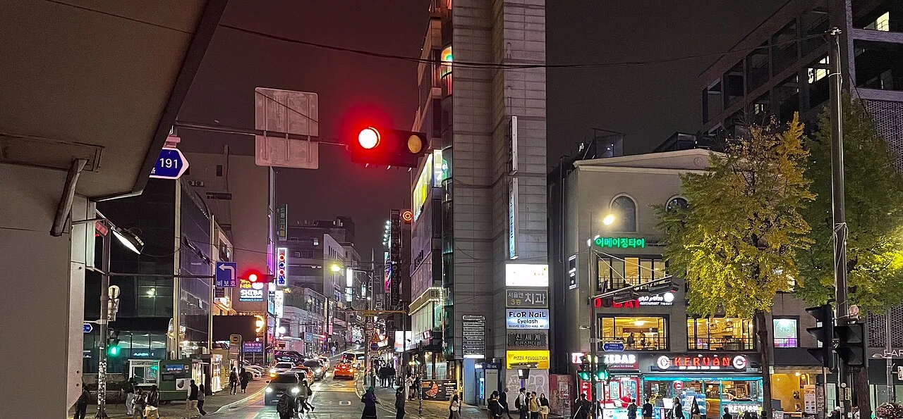
▲ 적색 신호가 켜진 서울 도심 교차로와 횡단보도. 적색 점등 후 정지선을 넘는 순간이 신호위반의 기본형이다 ⓒ eugene_o / Wikimedia Commons (CC BY 2.0, 원본 일부 크롭)
4. 꼬리물기(교차로 통행방법 위반) — 녹색에 들어가도 걸리는 이유
꼬리물기는 흔히 신호위반으로 불리지만 법적으로는 제25조 제5항(교차로 통행방법) 위반이다. 조문은 신호기로 교통정리를 하는 교차로에 들어가려는 운전자가 진행하려는 진로 앞쪽 차의 상황 때문에 교차로(정지선이 있으면 그 정지선을 넘은 부분)에서 정지하게 되어 다른 차의 통행에 방해가 될 우려가 있으면 교차로에 들어가서는 안 된다는 취지다. 판단 시점은 "정지한 순간"이 아니라 "진입하려는 순간"이다.
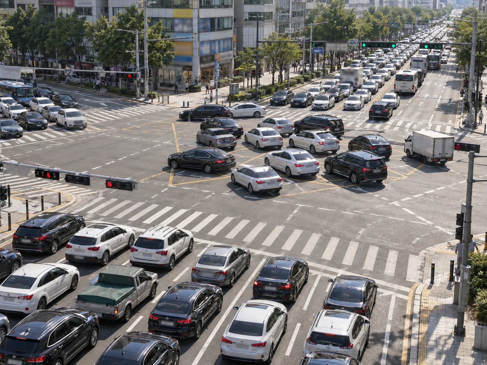
▲ 교차로 안쪽에서 멈춰 서 옆 방향 흐름을 막은 상황(설명용 AI 생성 예시 이미지). 진입 전에 건너편 차로의 빈 공간을 확인하는 것이 핵심이다 ⓒ CarPrism (AI 생성 이미지)
| 구분 | 승용차 | 승합차 | 이륜차 | 비고 |
|---|---|---|---|---|
| 현장 단속 범칙금(시행령 별표 8, 제25조) | 4만 원 | 5만 원 | 3만 원 | 운전자에게 부과 |
| 무인 단속 과태료(시행령 별표 6 제4호의4) | 5만 원 | 6만 원 | 4만 원 | 차 고용주등에게 부과, 벌점 없음 |
| 벌점(시행규칙 별표 28 제3호 가목) | 법령 별표 28에 제25조 적용 행 없음 | — | — | 일부 보도는 10점이라고 쓰지만 법령 표에서는 찾지 못함, 통고서로 재확인 |
2025년 12월부터 2026년 2월 말까지 서울 강남구 국기원사거리에서 AI 무인단속 시범 운영이 보도됐다. 보도된 판정 기준은 "녹색 신호에 진입했더라도 신호가 적색으로 바뀐 뒤 일정 시간 정차금지지대를 벗어나지 못한 경우"이며 구체적 체류 시간은 공개 기사에서 확인하지 못했다. 교통사고·차량 고장·돌발 장애물 등 운전자 귀책이 없는 경우는 단속에서 제외된다고 보도됐고, 2026년 상습 정체 교차로 우선 설치, 2027년 전국 확대 계획이 언급됐다(계획은 변경될 수 있음). 카메라 종류별 현황은 단속 카메라 유형 기사에 따로 정리했다.
📍 "벌점 10점" 논란은 이렇게 확인했다
시행규칙 별표 28 제3호 가목(정지처분 개별기준)의 위반사항을 처음부터 끝까지 대조했을 때 교차로 통행방법(제25조)을 적용법조로 적은 행은 찾지 못했다(제25조의2 회전교차로만 있음). 반면 일부 언론은 현장 단속 시 "범칙금 4만 원·벌점 10점"이라고 보도했다. 법령 표와 보도가 어긋나므로 이 글은 "벌점 확인하지 못함"으로 두고, 통고서에 적힌 벌점 칸을 직접 확인하길 권한다.
5. 비보호좌회전·우회전 신호 — "신호위반"이 아닌데 위험한 장면
비보호좌회전은 별표 2의 녹색 등화 문장("비보호좌회전표지 또는 비보호좌회전표시가 있는 곳에서는 좌회전할 수 있다")이 근거다. 즉 녹색에서 좌회전하는 것 자체는 신호위반이 아니다. 문제는 반대 방향 직진 차량이 있을 때 생기는 사고다. 표지가 없는 곳에서 녹색만 보고 좌회전하면 허용되지 않은 방향 전환이다.
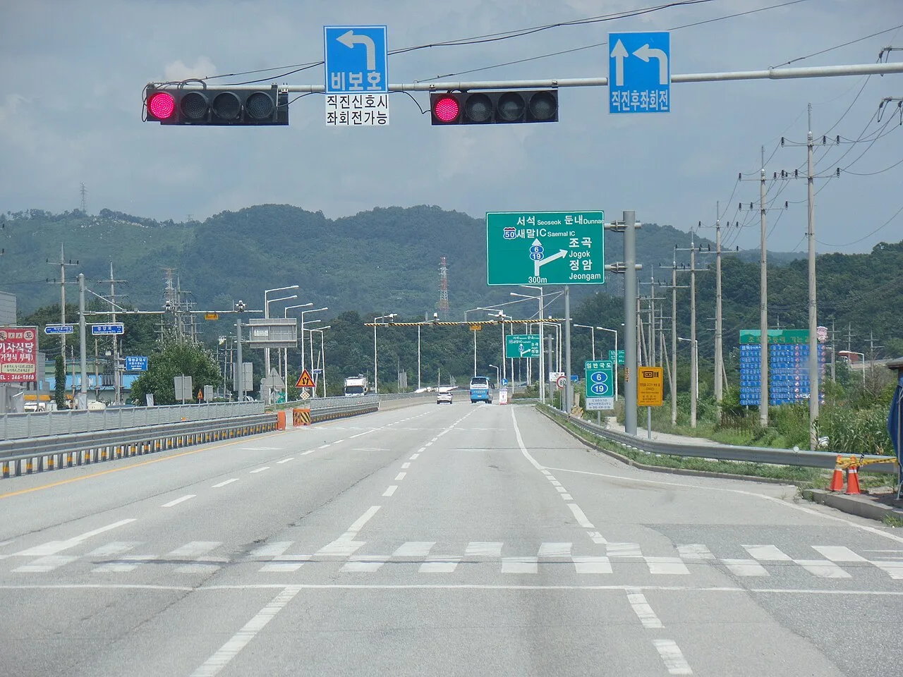
▲ "비보호/직진신호시 좌회전가능" 표지가 붙은 신호기(표지는 별표 2의 녹색 문장과 연결됨). 표지가 없는 교차로에서는 좌회전 신호가 따로 필요하다 ⓒ Jhcbs1019 / Wikimedia Commons (CC BY-SA 4.0)
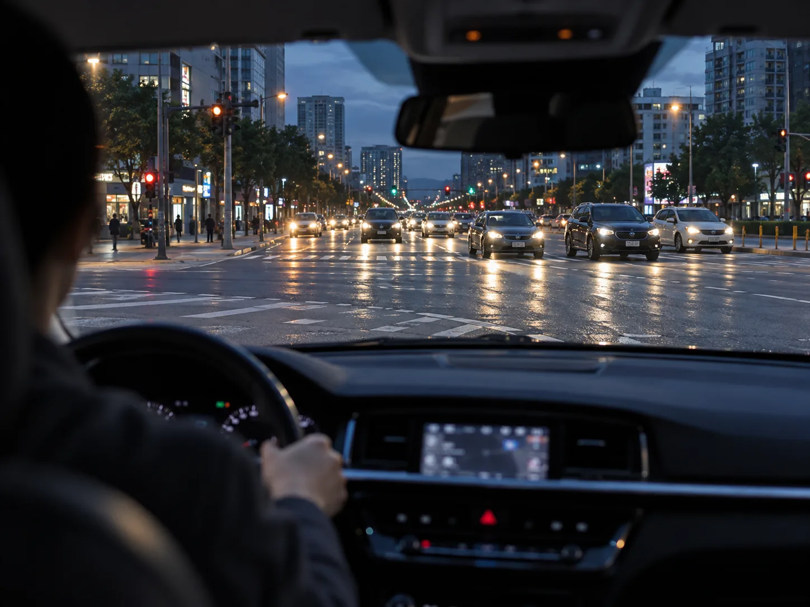
▲ 교차로에서 마주 오는 직진 차량을 확인하는 운전자 시점(설명용 AI 생성 예시 이미지). 비보호좌회전은 "허용"일 뿐 직진 차량이 우선이다 ⓒ CarPrism (AI 생성 이미지)
| 상황 | 판정 | 비고 |
|---|---|---|
| 비보호 표지 있는 곳에서 녹색에 좌회전 | 허용 | 반대편 직진 차량을 방해하면 사고 시 제48조 안전운전의무 위반 검토(범칙금 4만 원·벌점 10점) |
| 비보호 표지가 없는 곳에서 녹색에 좌회전 | 좌회전 신호(화살표)가 따로 있어야 함 | 신호·지시 위반(제5조)으로 볼 여지. 현장 적용 사례는 확인하지 못함 |
| 황색에 우회전 | 가능, 단 보행자 횡단을 방해하지 못함 | 보행자 있으면 제27조 일시정지 대상 |
| 적색에 우회전 | 정지선·횡단보도·교차로 직전에서 정지한 뒤 다른 차마를 방해하지 않을 때 가능 | "적신호시 우회전금지" 같은 별도 표지가 있으면 그에 따름 |
| 우회전 삼색등 적색 | 우회전 불가(별표 2 적색 3호) | 위반 시 제5조 신호·지시 위반 — 자세한 기준은 우회전 기사 |
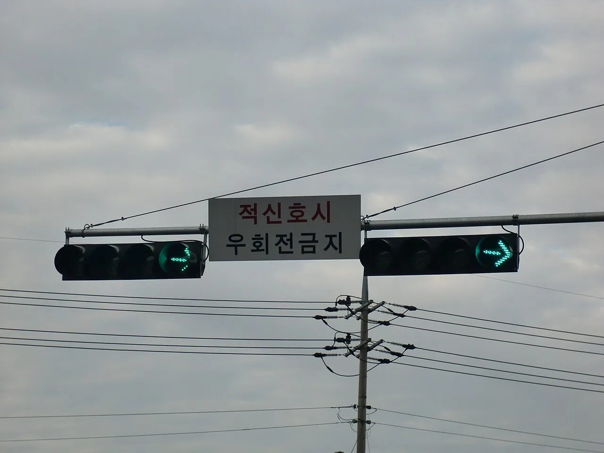
▲ "적신호시 우회전금지" 안내판이 달린 신호기. 일반 교차로의 적색 우회전 규칙과 다르다. 촬영 시기는 파일 정보 기준 ⓒ hyolee2 / Wikimedia Commons (CC BY-SA 3.0)
비보호좌회전 사고의 과실비율은 보험사 기준(손해보험협회 과실비율 인정기준)과 판례에 따라 갈리며, 이 글에서는 구체 수치를 확인하지 못해 싣지 않았다. 과실비율 일반론은 과실비율 기사, 표지 없는 교차로의 우선순위는 신호 없는 교차로 기사를 참고하면 된다.
6. 무인단속(신호위반 카메라)은 어떻게 판정하나
무인 신호위반 단속의 법적 구조는 제160조 제3항에 있다. 사진·영상 등으로 신호위반(제5조) 사실이 입증되고, 운전자를 확인할 수 없거나 범칙금 통고처분을 할 수 없는 경우 차의 고용주등(보통 차량 소유자)에게 과태료를 부과한다. 승용차 과태료는 시행령 별표 6 기준 신호·지시 위반 7만 원(승합 8만 원, 이륜 5만 원)이며 벌점은 붙지 않는다.
장비의 판정 방식에 대해 일반적으로 알려진 내용은 다음과 같다. 정지선 부근 검지기(또는 영상 분석)가 차량 위치를 파악하고, 적색 신호 중 정지선을 넘는 순간과 교차로 안으로 더 진입한 장면을 연속 촬영해 위반 여부를 가린다고 설명하는 해설이 다수다. 다만 장비 규격과 황색 구간 처리 기준은 경찰청 공식 문서로 확인하지 못했다. 장비·지점마다 다를 수 있으므로 "황색에 안 찍힌다"는 믿음은 법적 안전을 보장하지 않는다.
| 항목 | 내용 |
|---|---|
| 부과 대상 | 위반 차량의 고용주등(운전자를 확인할 수 없거나 범칙금 통고처분을 할 수 없는 경우) |
| 신호·지시 위반 과태료 | 승용 7만 원 · 승합 8만 원 · 이륜 5만 원, 벌점 없음 |
| 교차로 통행방법(제25조 제1항·제2항·제5항) 과태료 | 승용 5만 원 · 승합 6만 원 · 이륜 4만 원 |
| 과태료를 부과할 수 없는 경우 | 차량 도난 등 부득이한 사유, 운전자가 해당 위반으로 처벌(범칙금 통고 포함)된 경우, 의견 제출·이의제기로 운전자가 밝혀진 경우, 렌터카·리스 차량으로 차만 임대한 것이 명백한 경우 |
| 어린이보호구역(시행령 별표 10) | 현장 범칙금: 신호·지시 위반과 횡단보도 보행자 횡단 방해 승용 12만 원. 무인 과태료는 오전 8시부터 오후 8시 사이 신호·지시 위반이면 승용 13만 원(승합 14만 원, 이륜 9만 원). 시행령 제88조 제4항 단서·별표 7에서 확인했다 |
7. 범칙금·벌점·과태료 한눈에 + 벌점 누적 계산
아래는 승용차 기준이다. 범칙금은 시행령 별표 8(어린이보호구역은 별표 10), 벌점은 시행규칙 별표 28 개별기준, 과태료는 시행령 별표 6에서 각각 현행 값을 확인했다.
| 위반 | 근거 | 현장 범칙금 | 벌점 | 무인 과태료 |
|---|---|---|---|---|
| 신호·지시 위반 | 제5조 | 6만 원 | 15점 | 7만 원 |
| 횡단보도 보행자 횡단 방해(정지선 위반 포함 보행자 보호 불이행) | 제27조 제1·2·7항 | 6만 원 | 10점 | 제27조 제1항 7만 원 |
| 교차로 통행방법 위반(꼬리물기 등) | 제25조 | 4만 원 | 별표 28에 적용 행 없음(일부 보도 10점) | 제25조 제1·2·5항 5만 원 |
| 안전운전의무 위반 | 제48조 제1항 | 4만 원 | 10점 | 확인하지 못함 |
| 어린이보호구역(오전 8시~오후 8시) 신호·지시 위반 | 제5조 | 12만 원 | 30점(2배) | 13만 원(시행령 별표 7) |
벌점은 40점 이상이 되면 정지 처분이 결정되고 원칙적으로 1점을 1일로 계산한다(시행규칙 별표 28 제1호 다목). 누산점수는 위반일 기준 과거 3년간의 벌점을 합산해 관리한다. 아래는 위 표의 벌점으로 만든 카프리즘 계산 시나리오다.
| 시나리오 | 벌점 계산 | 합계 | 결과 |
|---|---|---|---|
| 신호위반 1회 | 15 | 15점 | 정지 없음 |
| 신호위반 2회 | 15+15 | 30점 | 정지 없음(정지 기준 40점까지 10점 남음) |
| 신호위반 2회 + 횡단보도 보행자 보호 불이행 1회 | 15+15+10 | 40점 | 정지 대상, 40일 |
| 신호위반 3회 | 15×3 | 45점 | 정지 대상, 45일 |
| 어린이보호구역 신호위반 1회 + 일반 신호위반 1회 | 30+15 | 45점 | 정지 대상, 45일 |
벌점 40점의 의미와 정지 기간·감경 절차는 벌점·면허정지 기사에서 더 자세히 다뤘다.
사고가 났다면 얘기가 달라진다. 교통사고처리특례법상 신호위반은 12대 중과실에 속해 종합보험에 가입돼 있어도 형사처벌 대상이 된다(앞서 본 대법원 사건도 상해 사건이었다). 목록과 처벌 구조는 12대 중과실 기사에 정리돼 있다.
8. 억울할 때 — 범칙금과 과태료의 이의신청 경로
이의 방법은 현장에서 받은 것이 범칙금 통고서인지, 우편으로 온 과태료 고지서인지에 따라 완전히 다르다. 절차를 법조문 기준으로 정리했다.
| 구분 | 범칙금(현장 통고) | 과태료(무인단속 등 우편 고지) |
|---|---|---|
| 납부·의견 기한 | 통고서 받은 날부터 10일 이내 납부(제164조 제1항) | 행정청이 10일 이상의 의견 제출 기간을 정해 사전 통지(질서위반행위규제법 제16조 제1항) |
| 기한을 넘기면 | 이후 20일 이내 20% 가산해 납부(제164조 제2항), 미납 시 즉결심판 청구(제165조 제1항). 다만 즉결심판 청구 전까지 통고금액에 50%를 더해 납부하면 청구를 면하고, 청구된 뒤라도 선고 전에 50%를 더해 납부하고 증빙을 내면 청구가 취소된다(제165조 제1항 단서·제2항) | 자진납부 감경은 의견 제출 기한 내 가능(제18조, 감경 비율은 확인하지 못함) |
| 불복 방법 | 납부하면 다시 벌 받지 않음(제164조 제3항). 불복하려면 납부하지 않고 즉결심판을 받은 뒤 선고·고지일부터 7일 이내 정식재판 청구(즉결심판에 관한 절차법 제14조 제1항, 원문 확인) | 과태료 부과 통지를 받은 날부터 60일 이내 서면 이의제기(질서위반행위규제법 제20조 제1항, 원문 확인) → 부과처분 효력 상실(제2항) |
| 벌점 | 범칙금 처분 시 해당 위반 벌점 부과(위 표) | 무인단속 과태료는 벌점 없음 |
| 운전자가 따로 있을 때 | — | 고용주등이 의견 제출·이의제기로 운전자를 밝히면 과태료 처분을 할 수 없음(제160조 제4항 제3호). 이후 운전자 처리 방식은 확인하지 못함 |
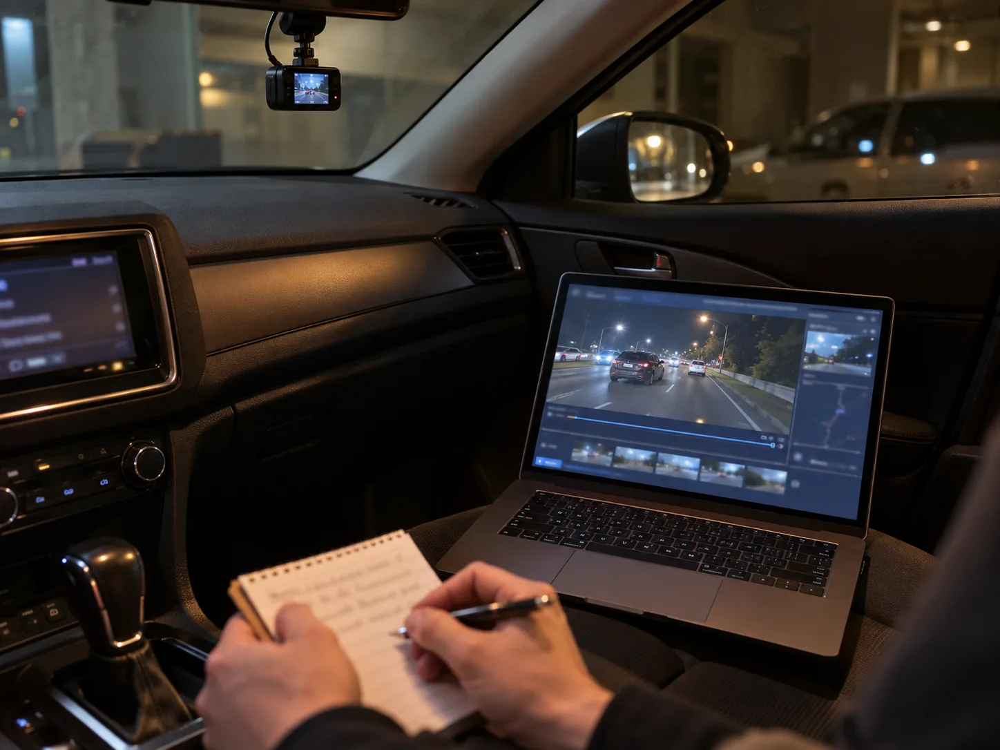
▲ 블랙박스 영상을 돌려 보며 신호 색과 정지선 위치를 메모하는 장면(설명용 AI 생성 예시 이미지). 이의신청의 성패는 증거 정리에서 갈린다 ⓒ CarPrism (AI 생성 이미지)
✅ 이의를 제기하기 전 확인할 5가지
1. 황색 점등 시점: 블랙박스 프레임에서 정지선(앞바퀴) 통과 직전·직후의 신호 색 확인
2. 내 속도: 영상에 속도 표시가 있다면 위 정지거리 표와 비교
3. 정지선 위치: 정지선 없는 교차로인지, 노면 마모로 정지선이 보이지 않았는지
4. 신호기 고장·점멸·경찰 수신호 여부(제5조 제2항: 신호와 경찰 수신호가 다르면 경찰 수신호를 따름)
5. 기한: 과태료 60일, 즉결심판 정식재판 7일 — 놓치면 확정됨
영상 제출 방법과 증거 능력은 블랙박스 영상 제출 기사, 이파인 이용과 인용·기각 사례는 과태료 이의신청 기사를 참고하면 된다. 다만 황색 통과 자체는 법문상 정지 의무 위반이므로, 이의신청에서 "황색에 통과했다"는 사실만으로는 구제가 어렵다는 점은 분명히 해 둔다. 구제 가능성은 "정지선을 넘은 시점에 신호가 황색이 아니라 녹색이었음", "이미 교차로에 진입한 상태에서 황색이 켜졌음", "정지선 표시가 없었음" 같은 사실관계가 다른 경우에 있다.
9. 지금 이 장면은 몇 번? — 상황별 판정 플로우
앞의 판정표를 운전석에서 위에서 아래로 묻는 순서로 다시 묶었다. 근거는 앞 절에서 확인한 조문(별표 2, 제5조·제25조·제27조)이며, 현장 단속의 실제 적용은 상황에 따라 달라질 수 있다.
| 순서 | 확인 질문 | "예"일 때 판정 | 현장 범칙금·벌점 |
|---|---|---|---|
| 1 | 횡단보도에 보행자가 건너고 있거나 건너려 하는가? | 신호와 별개로 제27조 제1항 일시정지 의무 위반 가능 | 6만 원·10점 |
| 2 | 신호가 적색인데 정지선을 넘어 진행했는가? | 제5조 신호·지시 위반 | 6만 원·15점 |
| 3 | 황색이 켜졌을 때 아직 정지선 앞(교차로 진입 전)이었는데 통과했는가? | 별표 2는 직전 정지가 원칙. 대법원 판단(보도)도 같은 취지로 신호위반 판정 | 6만 원·15점 |
| 4 | 황색이 켜졌을 때 이미 교차로에 일부라도 진입해 있었는가? | 별표 2는 신속히 빠져나가라고 규정. 정지는 요구되지 않음 | 해당 없음 |
| 5 | 녹색에 진입했지만 건너편 빈 공간이 없어 교차로 안에서 멈췄는가? | 제25조 제5항 교차로 통행방법 위반(꼬리물기) | 4만 원·벌점은 법령상 미확인 |
| 6 | 좌회전 신호 없이 녹색에 좌회전했는가? | 비보호 표지가 있으면 허용(직진 방해 시 제48조 검토), 표지가 없으면 신호위반으로 볼 여지 | 표지 있음: 제48조 적용 시 4만 원·10점 / 표지 없음: 확인하지 못함 |
| 7 | 위 위반이 어린이보호구역에서 오전 8시~오후 8시에 일어났는가? | 범칙금·벌점이 가중(시행령 별표 10, 신호·지시 위반 12만 원·30점) | 12만 원·30점 |
1번과 2~5번은 동시에 해당할 수 있다. 적색 정지선 위반 장면에 횡단보도 보행자까지 있었다면 몇 건이 통고되는지는 단속 경찰의 판단이며, 병과 여부는 확인하지 못했다.
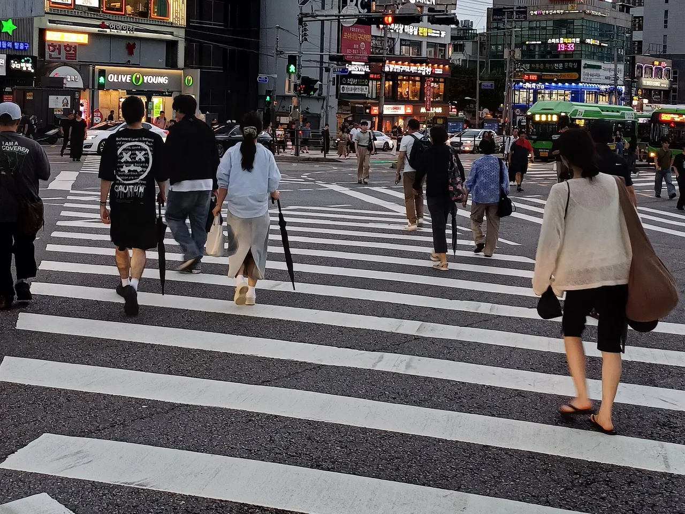
▲ 구로디지털단지역 앞 시흥대로 횡단보도를 건너는 보행자들(파일 정보 기준 2026년 7월 촬영). 정지선 앞에서 멈출지는 횡단보도 보행자 유무까지 보고 판단한다 ⓒ Striker9498 / Wikimedia Commons (CC0)
10. 위반 한 번에 실제로 얼마 드나 — 범칙금·가산금·벌점 합계 계산
범칙금은 기한 안에 내면 통고 금액 그대로지만, 기한을 넘기면 20% 가산(제164조 제2항), 즉결심판 청구 전까지 내려 해도 50% 가산(제165조 제1항 단서)이다. 계산식은 통고 범칙금 × 1.2와 통고 범칙금 × 1.5이며 node로 검산했다. 벌점은 앞서 본 시행규칙 별표 28 값을 그대로 썼다.
| 위반 | 기한 내 납부 | 벌점 | 기한 후 20% 가산(×1.2) | 즉결 청구 전 50% 가산(×1.5) |
|---|---|---|---|---|
| 일반 신호위반(제5조) | 6만 원 | 15점 | 7.2만 원 | 9만 원 |
| 꼬리물기(제25조 제5항) | 4만 원 | 확인되지 않음 | 4.8만 원 | 6만 원 |
| 어린이보호구역 신호위반(별표 10) | 12만 원 | 30점 | 14.4만 원 | 18만 원 |
| 횡단보도 보행자 보호 불이행(제27조 제1항, 일반도로 기준) | 6만 원 | 10점 | 7.2만 원 | 9만 원 |
| 어린이보호구역 횡단보도 보행자 횡단 방해(별표 10 제2호, 오전 8시~오후 8시) | 12만 원 | 20점(2배) | 14.4만 원 | 18만 원 |
한 장면에서 둘 이상이 적용되는 경우의 합산은 아래와 같다. "각 항목이 모두 부과된다면"이라는 가정이며, 실제로 몇 건이 통고되는지는 현장 판단이다.
| 시나리오 | 범칙금 합계 | 벌점 합계 | 정지까지 남은 점수 |
|---|---|---|---|
| 적색 정지선 위반 + 횡단보도 보행자 보호 불이행 동시 통고 | 12만 원 | 25점 | 15점 |
| 어린이보호구역(오전 8시~오후 8시) 신호위반 + 횡단보도 보행자 횡단 방해 동시 통고 | 24만 원(12만+12만) | 50점(30+20) | 정지 대상 |
| 어린이보호구역 신호위반 1회 | 12만 원 | 30점 | 10점 |
| 꼬리물기 1회 | 4만 원 | 0점(법령 기준, 보도 10점이면 10점) | 40점 |
어린이보호구역에서는 시행령 제93조 제2항이 제27조 제1~5항 위반도 별표 10으로 보내고, 별표 10 제2호(횡단보도 보행자 횡단 방해)의 승용 범칙금은 12만 원이다. 벌점은 시행규칙 별표 28 비고 4 나목에 따라 오전 8시~오후 8시에 제14호(신호·지시 위반 15점)와 제25호(보행자 보호 불이행 10점)가 각각 2배라 30+20=50점으로 한 번에 정지 기준(40점)을 넘는다. 위 표의 "보행자 보호 불이행 6만 원·10점(7.2만·9만 원)" 행은 일반도로 기준이고, 보호구역 안에서는 바로 아래 행의 12만 원·20점이 적용된다. 범칙금 합계는 12만+12만=24만 원이다(모두 통고된다고 가정).
보험료 할증에 미치는 영향은 이 글에서 확인하지 못했다. 보험사별 기준이 다르고 사고 여부에 따라 달라지므로, 할증 구조는 자동차보험 할증 체계 기사를, 어린이보호구역 규정 전반은 스쿨존 규정 기사를 참고하면 된다.
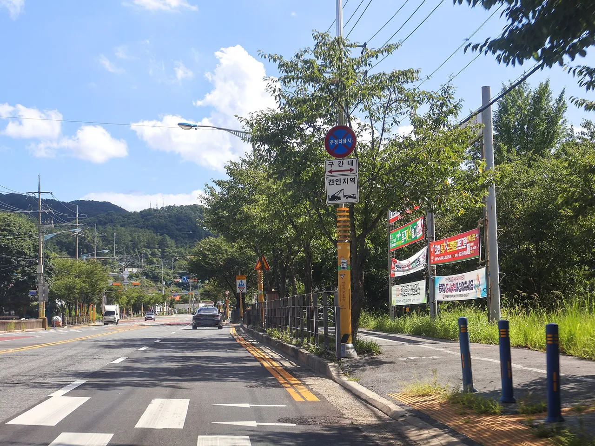
▲ 어린이보호구역 표지와 횡단보도가 설치된 국도 4호선 옥천로 구간(파일 정보 기준 2024년 7월 촬영). 보호구역에서 오전 8시~오후 8시에 신호·지시를 위반하면 범칙금·과태료가 가중된다 ⓒ LandAndTree / Wikimedia Commons (CC0)
11. 무인단속 통지 vs 현장 통고 — 대응 판정표
같은 위반이어도 무인 과태료는 금액이 1만 원 높지만 벌점이 없고, 현장 범칙금은 금액이 낮은 대신 벌점이 붙는다. 차이(과태료 − 범칙금)는 다음과 같다.
| 위반 | 현장 범칙금 | 무인 과태료 | 금액 차 | 현장 벌점(무인은 0점) |
|---|---|---|---|---|
| 일반 신호위반 | 6만 원 | 7만 원 | +1만 원 | 15점 |
| 꼬리물기 | 4만 원 | 5만 원 | +1만 원 | 법령상 미확인(보도 10점) |
| 어린이보호구역 신호위반 | 12만 원 | 13만 원 | +1만 원 | 30점 |
| 구분 | 현장 통고(범칙금) | 우편 고지(과태료) |
|---|---|---|
| 부과 대상 | 현장에서 확인된 운전자 | 차의 고용주등(보통 소유자). 운전자를 밝히면 과태료 처분을 할 수 없다(제160조 제4항 제3호) |
| 다툴 증거 | 블랙박스 영상(황색 점등 시점, 정지선 위치) | 고지서에 첨부된 사진·영상과 블랙박스를 대조 |
| 기한 | 10일 이내 납부, 불복은 즉결심판 선고 후 7일 이내 정식재판 | 통지를 받은 날부터 60일 이내 서면 이의제기 |
| 벌점이 걱정이면 | 벌점이 즉시 부과되므로 과거 3년 누산 점수부터 확인 | 벌점 없음. 운전자를 밝힌 뒤의 처리는 확인하지 못함 |
| 돈이 걱정이면 | 신호위반 기준 6만 원, 기한 후 7.2만 원, 즉결 청구 전 9만 원 | 의견 제출 기한 내 자진납부 시 감경(비율은 확인하지 못함) |
벌점 40점이 가까운 운전자라면 같은 위반이어도 벌점 0점인 과태료가 사실상 가볍다(차액 +1만 원 대 벌점 15점). 누산 점수 부담이 없다면 금액만 보면 현장 범칙금이 1만 원 싸다. 위반 사실 자체를 다툴 때는 앞 절의 증거 체크리스트가 기준이다.
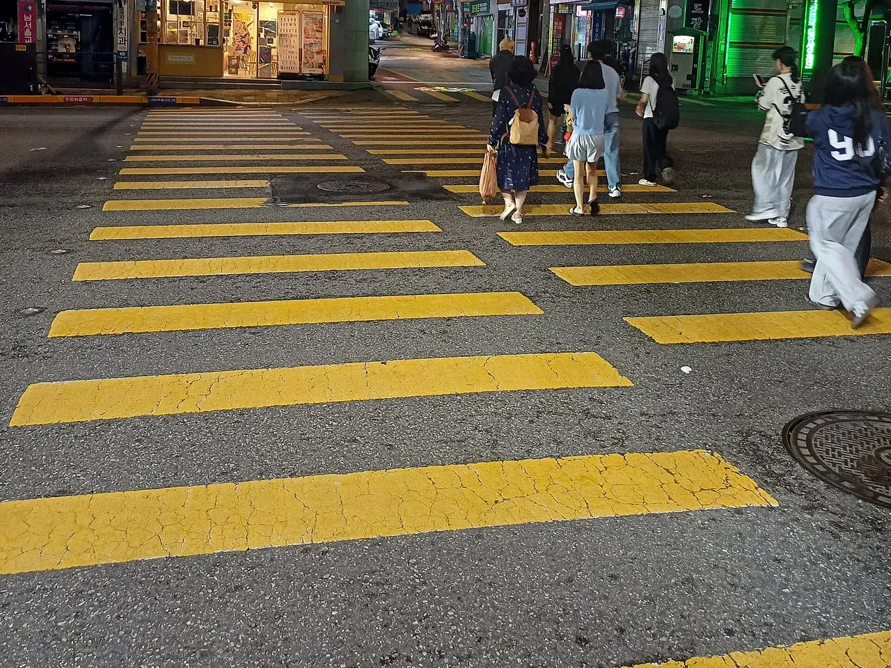
▲ 노란색으로 칠한 횡단보도(파일 정보 기준 2026년 7월 촬영, 어린이보호 목적 표기). 정확한 장소와 보호구역 지정 여부는 확인하지 못했다. 보행자가 있는 횡단보도에서는 제27조 일시정지 의무가 별도로 따른다 ⓒ Striker9498 / Wikimedia Commons (CC0)
12. 요약
황색은 통과 신호가 아니다. 시행규칙 별표 2는 정지선·횡단보도·교차로 직전 정지를 원칙으로 하고, 이미 교차로에 일부라도 진입한 차만 신속히 빠져나가도록 규정한다. 2024년 5월 보도된 대법원 판단은 정지거리가 정지선까지 거리보다 길 것으로 예상돼도 정지하지 않았다면 신호위반으로 봤다.
승용차 기준 신호위반은 현장 범칙금 6만 원·벌점 15점, 무인 과태료 7만 원(벌점 없음)이다. 꼬리물기는 제25조 제5항 위반으로 현장 범칙금 4만 원, 무인 과태료 5만 원이며 벌점은 시행규칙 별표 28에 제25조 적용 행이 없어 법령 기준으로는 확인되지 않는다(일부 보도는 10점). 신호위반 2회와 횡단보도 보행자 보호 불이행 1회면 합계 40점으로 정지 대상이다.
이의신청은 범칙금(즉결심판 후 7일 이내 정식재판)과 과태료(통지 후 60일 이내 서면 이의제기)가 다르다. 어린이보호구역(오전 8시~오후 8시) 무인 과태료는 신호·지시 위반 승용 13만 원이다. 확인하지 못한 항목은 과태료 자진납부 감경 비율, 신호위반 카메라 장비의 공식 판정 기준, 꼬리물기의 현장 벌점 부과 여부, 보험료 할증 영향이다.
추가 계산: 범칙금은 기한을 넘기면 ×1.2, 즉결 청구 전이면 ×1.5다(신호위반 6만 원은 7.2만·9만 원). 어린이보호구역(오전 8시~오후 8시)에서 신호위반(30점)에 횡단보도 보행자 횡단 방해(20점)가 겹치면 합계 50점, 범칙금 24만 원으로 정지 대상이 된다.